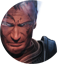
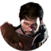
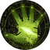

{kind=link}
Романы — неотъемлемая часть игр серии Dragon Age.
В «Dragon Age: Начало» четыре компаньона могут быть романтическими интересами, причём двое из них — Зевран и Лелиана — романтические интересы для персонажей обоих полов.
В «Dragon Age II» пять возможных романтических интересов, и все, кроме одного, могут быть интересом для женского и мужского персонажа; исключение — гетеросексуальный мужчина Себастьян, он является частью DLC.
В «Dragon Age: Инквизиция» игрок может завести роман с восемью персонажами. Из них Солас и Каллен имеют ограничения по расе: Каллен доступен только людям и эльфам, а Солас — только эльфийкам. Сэра предпочитает женщин, а Дориан — мужчин.
Узнать, как удачно флиртовать с конкретным персонажем, можно на индивидуальной странице романа персонажа.
Романтические интересы в Dragon Age: Начало
|  |
| «Дружелюбие-то можно изобразить. А вот с умом, к сожалению, такой фокус не пройдёт.» — Морриган Эта статья содержит спойлеры из Dragon Age: Origins. Нажмите здесь, чтобы показать их. |
Романтические интересы в Dragon Age II
|  |
| «Мы стоим над пропастью грядущего. Мир ждёт своего часа, чтобы рухнуть в бездну.» — Флемет Эта статья содержит спойлеры из Dragon Age II. Нажмите здесь, чтобы показать их. |
Романтические интересы в Dragon Age: Инквизиция
|  |
| «Говорят, только у Инквизитора есть силы, чтобы остановить это...» Эта статья содержит спойлеры из Dragon Age: Inquisition. Нажмите здесь, чтобы показать их. |
|
Романы | ||
|---|---|---|
| Dragon Age: Начало: | Алистер · Зевран · Лелиана · Морриган | |
| Dragon Age II: | Андерс · Изабела · Мерриль · Себастьян · Фенрис | |
| Dragon Age: Инквизиция: | Блэкволл · Дориан · Железный Бык · Жозефина · Каллен · Кассандра · Сэра · Солас | |